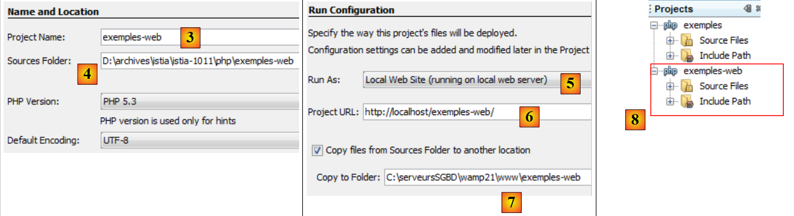
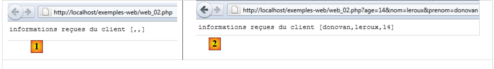

10. خوادم PHP
نظرًا لأن برامج PHP يمكن تنفيذها بواسطة خادم ويب، فإن مثل هذا البرنامج يصبح برنامجًا من جانب الخادم قادرًا على خدمة عملاء متعددين. من منظور العميل، فإن استدعاء خدمة ويب يعادل طلب عنوان URL لتلك الخدمة. يمكن كتابة العميل بأي لغة، بما في ذلك PHP. في الحالة الأخيرة، نستخدم وظائف الشبكة التي ناقشناها للتو. نحتاج أيضًا إلى معرفة كيفية "التواصل" مع خدمة الويب، أي فهم بروتوكول HTTP المستخدم للتواصل بين خادم الويب وعملائه. هذا هو الغرض من البرامج التالية.
سمح لنا عميل الويب الموصوف في القسم 9.2 باستكشاف جزء من بروتوكول HTTP.

في أبسط صورها، تتم التبادلات بين العميل والخادم على النحو التالي:
- يفتح العميل اتصالاً بالمنفذ 80 على خادم الويب
- يقدم طلبًا للحصول على مستند
- يقوم خادم الويب بإرسال المستند المطلوب وإغلاق الاتصال
- ثم يغلق العميل الاتصال
يمكن أن يتخذ العميل أشكالاً مختلفة: نص HTML، صورة، فيديو، إلخ. يمكن أن يكون مستنداً موجوداً (مستند ثابت) أو مستنداً يتم إنشاؤه على الفور بواسطة برنامج نصي (مستند ديناميكي). في الحالة الأخيرة، نشير إلى برمجة الويب. يمكن كتابة البرنامج النصي لإنشاء المستندات ديناميكياً بعدة لغات: PHP، Python، Perl، Java، Ruby، C#، VB.NET، إلخ.
هنا، نستخدم PHP لإنشاء مستندات نصية ديناميكيًا.
 |
- في [1]، يقوم العميل بإنشاء اتصال مع الخادم، ويطلب برنامج PHP نصي، وقد يرسل أو لا يرسل معلمات إلى ذلك البرنامج النصي
- في [2]، يقوم خادم الويب بتنفيذ البرنامج النصي PHP باستخدام مترجم PHP. يقوم هذا البرنامج النصي بإنشاء مستند يتم إرساله إلى العميل [3]
- يقوم الخادم بإغلاق الاتصال. ويقوم العميل بالمثل.
يمكن لخادم الويب التعامل مع عدة عملاء في وقت واحد. مع حزمة برامج WampServer، يكون خادم الويب هو خادم Apache، وهو خادم مفتوح المصدر من مؤسسة Apache (http://www.apache.org/). في التطبيقات التالية، يجب تشغيل WampServer. يؤدي ذلك إلى تنشيط ثلاثة مكونات: خادم الويب Apache، ونظام إدارة قواعد البيانات MySQL، ومترجم PHP.
سيتم كتابة البرامج النصية التي ينفذها خادم الويب باستخدام أداة NetBeans. حتى الآن، قمنا بكتابة برامج نصية PHP يتم تنفيذها في بيئة وحدة التحكم:
 |
يستخدم المستخدم وحدة التحكم لطلب تنفيذ برنامج نصي PHP وتلقي النتائج.
في تطبيقات العميل/الخادم التالية،
- يتم تنفيذ البرنامج النصي للعميل في بيئة وحدة التحكم
- يتم تنفيذ البرنامج النصي للخادم في بيئة ويب
 |
لا يمكن وضع البرنامج النصي PHP الخاص بالخادم في أي مكان في نظام الملفات. وذلك لأن خادم الويب يبحث عن المستندات الثابتة والديناميكية المطلوبة منه في المواقع المحددة في التكوين. يؤدي التكوين الافتراضي لـ WampServer إلى البحث عن المستندات في المجلد <WampServer>/www، حيث يمثل <WampServer> مجلد تثبيت WampServer. وبالتالي، إذا طلب عميل الويب مستندًا D بعنوان URL [http://localhost/D]، فسيقوم خادم الويب بتقديم المستند D الموجود في المسار [<WampServer>/www/D].
في الأمثلة التالية، سنضع نصوص الخادم في المجلد [www/web-examples]. إذا كان اسم نص الخادم هو S.php، فسيتم طلبه من خادم الويب باستخدام عنوان URL [http://localhost/exemples-web/S.php]. سيتم بعد ذلك تقديم المستند [<WampServer>/www/web-examples/S.php].
 |
لإنشاء برنامج نصي من جانب الخادم باستخدام NetBeans ، سنقوم بما يلي:
 |
- في [1]، نقوم بإنشاء مشروع جديد
- في [2]، نختار فئة [PHP] ومشروع [PHP Application]
 |
- في [3]، نسمي المشروع
- في [4]، نختار مجلدًا للمشروع
- في [5]، نحدد أن البرنامج النصي يجب أن يتم تنفيذه بواسطة خادم ويب محلي (سيكون عنوان URL للبرنامج النصي على الشكل http://localhost/...). سيكون خادم الويب المحلي هو خادم الويب Apache من WampServer.
- في [6]، نحدد عنوان URL للمشروع. هنا، نقرر أن البرنامج النصي المسمى S.php في المشروع سيتم الوصول إليه عبر عنوان URL [http://localhost/exemples-web/S.php]. بناءً على ما سبق، هذا يعني أن المسار إلى البرنامج النصي S.php في نظام الملفات سيكون [<WampServer>/www/web-examples/S.php]. وهذا ما تم تحديده في [7]. هنا، نحدد أن أي برنامج نصي S.php في المشروع يجب نسخه إلى بنية دليل خادم الويب Apache.
- في [8]، المشروع الجديد.
لنكتب نصًا برمجيًا للاختبار:
 |
- في [1]، نقوم بإنشاء أول نص برمجي PHP في مشروع [web-examples]
- في [2]، نسميه
- في [3]، بعد إنشائه، نضع فيه المحتوى التالي
بعد ذلك، يجب أن يكون WampServer قيد التشغيل.
 |
- في [4]، نقوم بتشغيل البرنامج النصي للويب [example1.php]. سيقوم NetBeans بعد ذلك بتشغيل المتصفح الافتراضي للجهاز وإعطائه تعليمات لعرض عنوان URL [http://localhost/exemples-web/exemple1.php] [5]
- في [6]، يعرض المتصفح ما أرسله البرنامج النصي للخادم إلى العميل.
ومن الآن فصاعدًا، سنواجه نوعين من عملاء الويب:
- متصفح كما هو موضح أعلاه. لاحظنا أن خادم الويب يرسل استجابة بالشكل التالي: رؤوس HTTP، سطر فارغ، نص. يعرض المتصفح النص فقط.
- نص برمجي PHP يعرض الرد بالكامل: رؤوس HTTP، سطر فارغ، نص.
من الآن فصاعدًا،
- ستُكتب البرامج النصية من جانب الخادم مثل [example1.php] أعلاه
- سيتم كتابة البرامج النصية من جانب العميل مثل البرامج النصية الخاصة بوحدة التحكم التي كتبناها حتى الآن.
10.1. تطبيق التاريخ/الوقت للعميل/الخادم
10.1.1. الخادم (web_01)
<?php
// time: number of milliseconds since 01/01/1970
// date-time display format
// d: 2-digit day
// m: 2-digit month
// y: 2-digit year
// H: hour 0.23
// i : minutes
// s: seconds
print date("d/m/y H:i:s",time());
بشكل أساسي، يعرض البرنامج النصي PHP أعلاه الوقت الحالي على الشاشة. ومع ذلك، عند تنفيذه بواسطة خادم ويب، يتم إعادة توجيه الدفق 1 — الذي يرتبط عادةً بالشاشة — إلى الاتصال الذي يربط الخادم بعميله. لذلك، في سياق الويب، يرسل البرنامج النصي أعلاه الوقت الحالي كنص إلى العميل.
دعونا نُشغّل هذا البرنامج النصي داخل NetBeans:
 |
- في [1]، نقوم بتشغيل البرنامج النصي. ثم يتم تشغيل متصفح ويب.
- في [2]، عنوان URL الذي طلبه متصفح الويب
- في [3]، النص الذي أرسله البرنامج النصي للخادم
يستخدم متصفح العميل بروتوكول HTTP للتواصل مع خادم الويب. وقد سبق أن وصفنا بنية هذا البروتوكول.
يرسل العميل أسطر نصية يمكن تقسيمها إلى ثلاثة أجزاء: رؤوس HTTP، وسطر فارغ، والمستند. عادةً ما يكون المستند المرسل إلى خادم الويب فارغًا أو يتكون من مجموعة من المعلمات في صيغة parami=vali، حيث vali هي قيمة أدخلها المستخدم في نموذج HTML.
يحتوي رد الخادم على نفس البنية: رؤوس HTTP، وسطر فارغ، ووثيقة، حيث تكون الوثيقة هذه المرة هي الوثيقة التي طلبها متصفح العميل. إذا أرسل العميل معلمات، فإن الوثيقة التي يتم إرجاعها تعتمد عمومًا على تلك المعلمات.
باستخدام متصفح Firefox، يمكنك عرض البيانات الفعلية المتبادلة بين العميل وخادم الويب. هناك ملحق لـ Firefox يُدعى Firebug يتيح لك تتبع عملية تبادل البيانات هذه. Firebug متاح على الرابط [https://addons.mozilla.org/fr/firefox/addon/firebug/]. إذا استخدمت متصفح Firefox لزيارة هذا الرابط، يمكنك تنزيل المكون الإضافي Firebug. سنفترض من الآن فصاعدًا أن المكون الإضافي Firebug قد تم تنزيله وتثبيته. يمكن الوصول إليه عبر خيار في قائمة Firefox:
 |
تفتح نافذة Firebug داخل نافذة متصفح Firefox. تحتوي هذه النافذة نفسها على قائمة:
 |
لعرض التبادلات بين العميل والخادم أثناء طلب HTTP، ندخل عنوان URL [http://localhost/exemples-web/web_01.php] في متصفح Firefox. ثم تمتلئ نافذة Firebug بالمعلومات:
 |
فيما يلي ملخص للتبادلات بين العميل والخادم:
- [1]: أرسل العميل طلب HTTP: GET /exemples-web/web_01.php HTTP/1.1 لطلب المستند [web01.php]
- [2]: أرسل الخادم الاستجابة: HTTP/1.1 200 OK، مشيرًا إلى أنه عثر على المستند المطلوب.
يتيح لك Firebug عرض التبادلات الكاملة. ما عليك سوى "توسيع" عنوان URL:
 |
في الأعلى، نرى رؤوس HTTP المتبادلة بين العميل (الطلب) والخادم (الاستجابة). من الممكن الحصول على شفرة المصدر للتبادل، أي الأسطر الفعلية من النص المتبادل [1]. ثم نحصل على شفرة المصدر التالية:
 |
لكتابة برنامج نصي من جانب العميل لخادم الويب، نحتاج ببساطة إلى محاكاة سلوك المتصفح. بعد إنشاء اتصال بالخادم، يمكن للبرنامج النصي من جانب العميل إرسال الأسطر الثمانية للطلب الموضحة أعلاه. في الواقع، ليست كل العناصر ضرورية، ولن نرسل سوى الأسطر الثلاثة التالية:
- السطر 1: يحدد المستند المطلوب وبروتوكول HTTP المستخدم
- السطر 2: يوفر اسم مضيف البرنامج النصي للعميل
- السطر 3: يشير إلى أنه بعد التبادل، سيقوم العميل بإغلاق الاتصال بالخادم
لنلقِ نظرة الآن على استجابة الخادم. نعلم أنها تم إنشاؤها بواسطة البرنامج النصي PHP [web_01.php]. أعلاه، نرى رؤوس HTTP للاستجابة. يُظهر كود البرنامج النصي [web01.php] أنه لم يقم بإنشائها. تذكر تكوين البرنامج النصي للخادم:
 |
إن خادم الويب هو الذي أنشأ رؤوس HTTP للاستجابة. يمكن لبرنامج الخادم إنشاءها بنفسه. سنرى مثالاً على ذلك لاحقًا.
ذكرنا أن استجابة خادم الويب تأخذ الشكل التالي: رؤوس HTTP، سطر فارغ، مستند. إذا كان المستند مستندًا نصيًا، فيمكننا عرضه في علامة التبويب [Response] في Firebug:
 |
تم إنشاء هذا الرد بواسطة البرنامج النصي [web_01.php].
10.1.2. عميل (client1_web_01)
سنقوم الآن بكتابة برنامج نصي للعميل للخدمة السابقة. نحن نعلم أن العميل يجب أن:
- فتح اتصال بخادم الويب
- إرسال النص: رؤوس HTTP، سطر فارغ
- قراءة الرد الكامل للخادم حتى يغلق الخادم اتصاله بالعميل
- إغلاق الاتصال بالخادم
يتم تشغيل البرنامج النصي للعميل في بيئة وحدة التحكم NetBeans:
 |
- في [1]، تم تضمين البرنامج النصي للعميل [client1_web_01.php] في مشروع NetBeans [examples]
- في [2]، خصائص مشروع NetBeans [examples]
- في [3]، يعمل مشروع NetBeans [examples] في وضع "سطر الأوامر"، والذي أشرنا إليه أيضًا بوضع "وحدة التحكم".
في [2]، خصائص مشروع NetBeans [examples]
<?php
// data
$HOTE = "localhost";
$PORT = 80;
$urlServeur = "/exemples-web/web_01.php";
// open a connection on port 80 of $HOTE
$connexion = fsockopen($HOTE, $PORT);
// mistake?
if (!$connexion) {
print "Erreur : $erreur\n";
exit;
}
// protocol HTTP headers must end with an empty line
// GET
fputs($connexion, "GET $urlServeur HTTP/1.1\n");
// Host
fputs($connexion, "Host: localhost\n");
// Connection
fputs($connexion,"Connection: close\n");
// blank line
fputs($connexion,"\n");
// the server will now respond on channel $connexion. It will send all
// then close the channel. The client therefore reads everything that arrives from $connexion
// until the channel closes
while ($ligne = fgets($connexion, 1000)) {
print "$ligne";
}//while
// the customer in turn closes the connection
fclose($connexion);
// end
exit;
تعليقات
- السطر 8: فتح اتصال بالخادم
- السطر 16: أمر HTTP GET
- السطر 18: أمر HTTP Host
- السطر 20: أمر HTTP Connection
- السطر 22: سطر فارغ
- الأسطر 26-28: قراءة جميع الأسطر النصية المرسلة من الخادم حتى يغلق الاتصال.
- السطر 30: يقوم العميل بإغلاق الاتصال
يؤدي تنفيذ البرنامج النصي للعميل إلى النتائج التالية:
التعليقات
- الأسطر 1–7: استجابة HTTP من خادم الويب.
- السطر 8: السطر الفارغ الذي يشير إلى نهاية رؤوس HTTP
- السطور 9 وما بعدها: المستند. هنا، هو نص بسيط يمثل التاريخ والوقت الحاليين. هذا هو النص الذي كتبه البرنامج النصي PHP لإخراج #1.
- السطر 1: يرد الخادم بأنه عثر على المستند المطلوب.
- السطر 2: التاريخ والوقت الحاليان للخادم
- السطر 3: هوية خادم الويب
- السطر 4: يشير إلى أن المستند التالي تم إنشاؤه بواسطة برنامج PHP
- السطر 5: عدد الأحرف في المستند
- السطر 6: يشير الخادم إلى أنه بعد إرسال المستند، سيقوم بإغلاق الاتصال
- السطر 7: يشير إلى أن المستند الذي أرسله الخادم هو نص بتنسيق HTML. هذا غير صحيح هنا. المستند هو نص عادي. عندما لا يكون المستند بتنسيق HTML، فإن الأمر متروك لبرنامج PHP النصي للإشارة إلى ذلك. لم نقم بذلك هنا.
10.1.3. عميل ثانٍ (client2_web_01)
عرض العميل السابق كل ما أرسله إليه خادم الويب. في الممارسة العملية، نتجاهل عمومًا رؤوس HTTP في الاستجابة ونركز على نص المستند. هنا، نريد استرداد التاريخ والوقت اللذين أرسلهما البرنامج النصي PHP من جانب الخادم. سنسترد هذه المعلومات باستخدام تعبير عادي.
<?php
// retrieve information sent by a web server
// data
$HOTE = "localhost";
$PORT = 80;
$urlServeur = "/exemples-web/web_01.php";
// open a connection on port 80 of $HOTE
$connexion = fsockopen($HOTE, $PORT);
// mistake?
if (!$connexion) {
print "Erreur : $erreur\n";
exit;
}
// protocol HTTP headers must end with an empty line
// GET
fputs($connexion, "GET $urlServeur HTTP/1.1\n");
// Host
fputs($connexion, "Host: localhost\n");
// Connection
fputs($connexion,"Connection: close\n");
// blank line
fputs($connexion,"\n");
// the server will now respond on channel $connexion. It will send all
// then close the channel. The client therefore reads everything that arrives from $connexion
// until it finds the line it's looking for in the form dd/mm/yy hh:mm:ss
while ($ligne = fgets($connexion, 1000)) {
print "$ligne";
if (preg_match("/(\d\d)\/(\d\d)\/(\d\d) (\d\d):(\d\d):(\d\d)/", $ligne, $champs)) {
// we retrieve the # fields
array_shift($champs); // e// removes the 1st element from the array fields
// we retrieve the 6 fields in 6 variables
list($j, $m, $a, $h, $i, $s) = $champs;
// result display
print "\ndateheure=[$j,$m,$a,$h,$i,$s]\n";
}////if
}//while
// the customer in turn closes the connection
fclose($connexion);
// end
exit;
10.2. استرجاع الخادم للمعلمات المرسلة من قبل العميل
في بروتوكول HTTP، يتوفر للعميل طريقتان لتمرير المعلمات إلى خادم الويب:
- يطلب عنوان URL للخدمة في النموذج
GET url?param1=val1¶m2=val2¶m3=val3… HTTP/1.0
حيث يجب أولاً ترميز القيم الصالحة بحيث يتم استبدال بعض الأحرف المحجوزة بقيمها السداسية العشرية.
- يطلب عنوان URL للخدمة بالشكل
POST url HTTP/1.0
ثم، من بين رؤوس HTTP المرسلة إلى الخادم، تتضمن الرأس التالية:
وتنتهي بقية الرؤوس المرسلة من جانب العميل بسطر فارغ. ويمكنه بعد ذلك إرسال بياناته في شكل
حيث يجب ترميز القيم الصالحة مسبقًا، كما هو الحال مع طريقة GET. يجب أن يكون عدد الأحرف المرسلة إلى الخادم N، حيث N هي القيمة المعلنة في الرأس
يسترد البرنامج النصي PHP المعلمات parami السابقة المرسلة من العميل قيمها من المصفوفة:
- $_GET["parami"] لطلب GET
- $_POST["parami"] لطلب POST
10.2.1. عميل GET (client1_web_02)
يرسل البرنامج النصي PHP أدناه ثلاث معلمات [last_name، first_name، age] إلى الخادم.
<?php
// client: sends firstname,lastname,age to the server using the GET method
// data
$HOTE = "localhost";
$PORT = 80;
$URL = "/exemples-web/web_02.php";
list($prenom, $nom, $age) = array("jean-paul", "de la hûche", 45);
// web server connection
$connexion = fsockopen($HOTE, $PORT);
// return if error
if (!$connexion) {
print "Echec de la connexion au site ($HOTE,$PORT) : $erreur";
exit;
}//if
// information sent to server PHP
// information is encoded
$infos = "prenom=" . urlencode(utf8_decode($prenom)) . "&nom=" . urlencode(utf8_decode($nom)) . "&age=" . urlencode("$age");
// console monitoring
print "infos envoyées au serveur (GET)=$infos\n";
print "URL demandée=[$URL?$infos]\n\n";
// protocol HTTP headers must end with an empty line
// GET
fputs($connexion, "GET $URL?$infos HTTP/1.1\n");
// Host
fputs($connexion, "Host: localhost\n");
// Connection
fputs($connexion,"Connection: close\n");
// blank line
fputs($connexion,"\n");
// the server will now respond on channel $connexion. It will send all
// then close the channel. The client reads everything from $connexion until the channel is closed
while ($ligne = fgets($connexion, 1000))
print "$ligne";
// the customer in turn closes the connection
fclose($connexion);
تعليقات
- السطر 7: عنوان URL لبرنامج الخادم
- السطر 8: قيم المعلمات الثلاثة
- السطر 10: يفتح اتصالاً بخادم الويب
- السطر 18: ترميز المعلمات الثلاث. نحن نعمل في برنامج نصي مكتوب في NetBeans باستخدام ترميز الأحرف UTF-8. ولذلك، فإن قيم المعلمات الثلاث الواردة في السطر 8 مرمزة بتنسيق UTF-8. تقوم الدالة utf8_decode بتحويل ترميزها إلى ISO-8859-1. بمجرد الانتهاء من ذلك، يمكن ترميزها لعنوان URL. يتم استبدال جميع الأحرف غير الأبجدية بـ %xx، حيث xx هي القيمة السداسية العشرية للحرف. يتم استبدال المسافات بعلامة +.
- السطر 24: عنوان URL المطلوب هو $URL?$infos، حيث يكون $infos بالصيغة last_name=val1&first_name=val2&age=val3.
10.2.2. الخادم (web_02)
يعرض الخادم ببساطة ما يتلقاه.
<?php
// error management
ini_set("display_errors", "off");
// server retrieves information sent by the client
// here firstname=P&lastname=N&age=A
// this information is automatically available in the
// $_GET['prenom'], $_GET['nom'], $_GET['age']
// we send them back to the customer
// uTF-8 header
header("Content-Type: text/plain; charset=utf-8");
// parameters sent to server
$prenom = isset($_GET['prenom']) ? $_GET['prenom'] : "";
$nom = isset($_GET['nom']) ? $_GET['nom'] : "";
$age = isset($_GET['age']) ? $_GET['age'] : "";
// customer response
$réponse = "informations reçues du client [" .
utf8_encode(htmlspecialchars($prenom, ENT_QUOTES)) .
"," . utf8_encode(htmlspecialchars($nom, ENT_QUOTES)) .
"," . utf8_encode(htmlspecialchars($age, ENT_QUOTES)) . "]\n";
print $réponse;
تعليقات
- السطر 13: يحدد رأس HTTP "Content-Type". بشكل افتراضي، يرسل خادم الويب الرأس
، مما يشير إلى أن الاستجابة عبارة عن نص بتنسيق HTML. هنا، ستكون الاستجابة نصًا غير منسق مع أحرف مشفرة بـ UTF-8:
يجب إرسال رؤوس HTTP قبل استجابة الخادم. لذلك، في الكود أعلاه، يجب أن يأتي استدعاء دالة الرأس قبل أي عبارات طباعة.
- الأسطر 16–18: نسترد المعلمات الثلاثة من المصفوفة $_GET.
- السطر 21: نقوم بإنشاء السلسلة التي سيتم إرسالها كاستجابة للعميل. تحمل بعض الأحرف معاني خاصة في HTML ويجب استبدالها بكيانات HTML حتى يتم عرضها. تقوم الدالة htmlspecialchars($string) باستبدال كل هذه الأحرف بمكافئاتها في السلسلة $string. على سبيل المثال، يتحول الحرف $ إلى &. ثم، بما أننا حددنا في السطر 13 أن الرد سيكون نصًا بتنسيق UTF-8، نقوم بترميز القيم المسترجعة بتنسيق UTF-8.
- السطر 25: يتم إرسال الرد إلى العميل
دعونا نقوم بتشغيل البرنامج النصي [web_02] من NetBeans. سيتم بعد ذلك فتح متصفح لعرض عنوان URL [http://localhost/exemples-web/web_02.php]:
 |
- في [1]، يعرض المتصفح عنوان URL [http://localhost/exemples-web/web_02.php]. ونظرًا لأننا لم نضف معلمات إلى عنوان URL هذا، فقد استجاب الخادم بمعلمات فارغة. تذكر أن استجابة الخادم هي تلك المكتوبة باستخدام عبارة print.
- في [2]، نضيف معلمات إلى عنوان URL. هذه المرة، يعرضها البرنامج النصي للخادم بشكل صحيح.
لاحظ أن NetBeans ليس مطلوبًا لتشغيل نص برمجي للخادم. ما عليك سوى إدخال عنوان URL الخاص بالنص البرمجي للخادم في متصفح لتنفيذه.
الاختبار 2
نقوم بتشغيل العميل [client1_web_02.php] في NetBeans. نتلقى الاستجابة التالية:
- السطر 1: ترميز المعلمات الثلاثة. يمكننا ملاحظة أن الحرف û قد أصبح %FB.
- السطر 12: استجابة الخادم
10.2.3. عميل POST (client2_web_03)
يرسل عميل HTTP التسلسل النصي التالي إلى خادم الويب: رؤوس HTTP، سطر فارغ، مستند. في العميل السابق، كان هذا التسلسل كما يلي:
لم يكن هناك مستند. وهناك طريقة أخرى لإرسال المعلمات، تُعرف باسم طريقة POST. وفي هذه الحالة، يكون تسلسل النص المرسَل إلى خادم الويب كما يلي:
هذه المرة، المعلمات التي تم تضمينها في رؤوس HTTP لعميل GET هي جزء من المستند المرسل بعد الرؤوس في عميل POST.
نص برمجة عميل POST هو كما يلي:
<?php
// client: sends firstname,lastname,age to the server using the POST method
// data
$HOTE = "localhost";
$PORT = 80;
$URL = "/exemples-web/web_03.php";
list($prenom, $nom, $age) = array("jean-paul", "de la hûche", 45);
// web server connection
$connexion = fsockopen($HOTE, $PORT);
// return if error
if (!$connexion) {
print "Echec de la connexion au site ($HOTE,$PORT) : $erreur";
exit;
}//if
// information sent to server PHP
// information is encoded
$infos = "prenom=" . urlencode(utf8_decode($prenom)) . "&nom=" . urlencode(utf8_decode($nom)) . "&age=" . urlencode("$age");
print "client : infos envoyées au serveur (POST) : $infos\n";
// connect to the URL $URL by posting (POST) parameters to it
// protocol HTTP headers must end with an empty line
// POST
fputs($connexion, "POST $URL HTTP/1.1\n");
// Host
fputs($connexion, "Host: localhost\n");
// Connection
fputs($connexion,"Connection: close\n");
// Content-type
fputs($connexion, "Content-type: application/x-www-form-urlencoded\n");
// Content-length
// send the size (number of characters) of the information to be sent
fputs($connexion, "Content-length: " . strlen($infos) . "\n");
// send an empty line
fputs($connexion, "\n");
// we send the news
fputs($connexion, $infos);
// the server will now respond on channel $connexion. It will send all
// then close the channel. The client reads everything that arrives from $connexion
// until the channel closes
while ($ligne = fgets($connexion, 1000))
print "$ligne";
// the customer in turn closes the connection
fclose($connexion);
تعليقات
- السطر 7: عنوان URL لخدمة الويب التي سيتصل بها عميل POST. سيتم وصف هذه الخدمة قريبًا.
- السطر 8: المعلمات التي سيتم إرسالها إلى خدمة الويب
- السطر 10: الاتصال بخادم الويب
- السطر 18: ترميز المعلمات التي سيتم إرسالها إلى خدمة الويب
- السطر 23: أمر HTTP POST
- السطر 25: أمر HTTP Host
- السطر 27: رأس HTTP Connection
- السطر 29: رأس HTTP Content-Type. لقد صادفنا هذا الرأس HTTP من قبل. وهو موجود في كل مرة يتم فيها إرسال مستند. يستخدم خادم الويب الذي يرسل مستند HTML HTTP
وإذا أرسل نصًا غير منسق، فإنه يستخدم رأس HTTP
يرسل عميل POST الخاص بنا مستندًا نصيًّا على شكل param1=val1¶m2=val2&.... ويكون نوع هذا المستند هو application/x-www-form-urlencoded. ولن نشرح السبب، لأن ذلك سيتطلب منا شرح ماهية نموذج الويب.
- السطر 32: توجيه Content-length. لقد صادفنا هذا الرأس HTTP من قبل. وهو موجود في كل مرة يتم فيها إرسال مستند. ويشير إلى عدد البايتات في المستند.
- السطر 34: السطر الفارغ الذي يشير إلى نهاية رؤوس HTTP
- السطر 36: إرسال المعلمات
- السطران 40-41: قراءة الاستجابة الكاملة من الخادم
- السطر 43: إغلاق الاتصال
10.2.4. الخادم (web_03)
تقوم خدمة الويب [web_03] بنفس ما تقوم به خدمة الويب [web_02]. فهي تقرأ المعلمات المرسلة من قبل عميل POST وترسلها مرة أخرى إلى العميل. وفيما يلي شفرة البرمجة الخاصة بها:
<?php
// error management
ini_set("display_errors", "off");
// uTF-8 header
header("Content-Type: text/plain; charset=utf-8");
// server retrieves information sent by the client
// here firstname=P&lastname=N&age=A
// this information is automatically available in the
// $_POST['prenom'], $_POST['nom'], $_POST['age']
// we send them back to the customer
// parameters sent to server
$prenom = isset($_POST['prenom']) ? $_POST['prenom'] : "";
$nom = isset($_POST['nom']) ? $_POST['nom'] : "";
$age = isset($_POST['age']) ? $_POST['age'] : "";
// customer response
$réponse = "informations reçues du client [" .
utf8_encode(htmlspecialchars($prenom, ENT_QUOTES)) .
"," . utf8_encode(htmlspecialchars($nom, ENT_QUOTES)) .
"," . utf8_encode(htmlspecialchars($age, ENT_QUOTES)) . "]\n";
print $réponse;
تعليقات
- الأسطر 14–16: تصبح المعلمات المرسلة من قبل عميل POST متاحة في المصفوفة $_POST لخدمة الويب التي تستقبلها.
- السطر 6: رأس HTTP Content-Type. قد تتفاجأ بعدم وجود رأس HTTP Content-Length في رؤوس HTTP، والذي يشير إلى حجم المستند الذي يتم إرساله إلى العميل. لقد رأينا أن خادم الويب يرسل رؤوس HTTP بشكل افتراضي. رأس Content-Length هو أحدها.
بمجرد كتابة البرنامج النصي للخادم في NetBeans، يصبح متاحًا على الفور عبر خادم WampServer Apache. تذكر أن هذا يتم تحقيقه من خلال التكوين (انظر الفقرة 10). نقوم بتشغيل العميل، الذي يستعلم الخادم، ثم نتلقى الاستجابة التالية:
- السطور 2-10: استجابة الخادم
- الأسطر 2-8: رؤوس HTTP
- السطر 10: المستند
- السطر 6: رأس HTTP Content-Length. نظرًا لأن هذا الرأس لم يتم إنشاؤه بواسطة البرنامج النصي للخادم، فقد تم إنشاؤه بواسطة خادم الويب.
- السطر 8: الرأس الوحيد الذي تم إنشاؤه بواسطة البرنامج النصي للخادم
10.3. استرداد متغيرات بيئة خادم الويب
يتم تشغيل البرنامج النصي للخادم في بيئة ويب يمكنه الوصول إليها. يتم تخزين هذه البيئة في قاموس $_SERVER. أولاً، نكتب تطبيق خادم يرسل محتويات هذا القاموس إلى عملائه.
10.3.1. الخادم (web_04)
<?php
// error management
ini_set("display_errors", "off");
// uTF-8 header
header("Content-Type: text/plain; charset=utf-8");
// returns to the client the list of variables available in the server environment
foreach ($_SERVER as $clé => $valeur) {
print "[$clé,$valeur]\n";
}
- يتم إرسال أزواج (المفتاح، القيمة) من قاموس $_SERVER إلى العملاء.
والنتيجة التي يتم الحصول عليها عندما يكون العميل متصفح ويب هي كما يلي:

فيما يلي معنى بعض المتغيرات (لنظام Windows. في نظام Linux، ستكون مختلفة):
يمثل CMDE رأس HTTP الذي يرسله العميل. لدينا إمكانية الوصول إلى جميع هذه الرؤوس. | |
مسار الملفات القابلة للتنفيذ على الجهاز الذي يعمل عليه البرنامج النصي للخادم | |
مسار مترجم أوامر DOS | |
امتدادات الملفات القابلة للتنفيذ | |
مجلد تثبيت Windows | |
توقيع خادم الويب. لا يوجد شيء هنا. | |
نوع خادم الويب | |
اسم الإنترنت لجهاز خادم الويب | |
منفذ الاستماع لخادم الويب | |
عنوان IP لجهاز خادم الويب | |
عنوان IP الخاص بالعميل. في هذه الحالة، كان العميل على نفس الجهاز الذي يوجد عليه الخادم. | |
منفذ اتصال العميل | |
جذر شجرة الدليل الخاصة بالوثائق التي يقدمها خادم الويب | |
عنوان البريد الإلكتروني لمسؤول خادم الويب | |
المسار الكامل لبرنامج الخادم النصي | |
إصدار بروتوكول HTTP المستخدم من قبل خادم الويب | |
طريقة HTTP التي يستخدمها العميل. هناك أربع طرق: GET، POST، PUT، DELETE | |
المعلمات المرسلة مع طلب GET /url?parameters | |
عنوان URL الذي طلبه العميل. إذا طلب المتصفح عنوان URL http://machine[:port]/uri، فسيكون REQUEST_URI هو uri | |
$_SERVER['SCRIPT_FILENAME'] = $_SERVER['DOCUMENT_ROOT'] . $_SERVER['SCRIPT_NAME'] |
10.3.2. العميل (client1_web_04)
يعرض العميل ببساطة كل ما يرسله إليه الخادم.
<?php
// data
$HOTE = "localhost";
$PORT = 80;
$urlServeur = "/exemples-web/web_04.php";
// open a connection on port 80 of $HOTE
$connexion = fsockopen($HOTE, $PORT);
// mistake?
if (!$connexion) {
print "Erreur : $erreur\n";
exit;
}
// connect to the Web server on a URL
// protocol HTTP headers must end with an empty line
// GET
fputs($connexion, "GET $urlServeur HTTP/1.1\n");
// Host
fputs($connexion, "Host: localhost\n");
// Connection
fputs($connexion,"Connection: close\n");
// blank line
fputs($connexion,"\n");
// the server will now respond on channel $connexion. It will send all
// then close the channel. The client therefore reads everything that arrives from $connexion
// until the channel closes
while ($ligne = fgets($connexion, 1000)) {
print "$ligne";
}//while
// the customer in turn closes the connection
fclose($connexion);
// end
exit;
10.4. إدارة جلسات الويب
في أمثلة العميل/الخادم السابقة، كانت العملية كما يلي:
- يفتح العميل اتصالاً بالمنفذ 80 على خادم الويب
- يرسل تسلسل النص: رؤوس HTTP، سطر فارغ، [المستند]
- رداً على ذلك، يرسل الخادم تسلسلاً من نفس النوع
- يغلق الخادم الاتصال بالعميل
- يغلق العميل الاتصال بالخادم
إذا أرسل نفس العميل طلبًا جديدًا إلى خادم الويب بعد ذلك بوقت قصير، يتم إنشاء اتصال جديد بين العميل والخادم. لا يمكن للخادم معرفة ما إذا كان العميل المتصل قد زار الموقع من قبل أم أن هذا هو الطلب الأول. بين الاتصالات، "ينسى" الخادم عميله. لهذا السبب، يُقال إن بروتوكول HTTP هو بروتوكول عديم الحالة. ومع ذلك، من المفيد أن يتذكر الخادم عملائه. على سبيل المثال، إذا كان التطبيق آمنًا، سيرسل العميل إلى الخادم اسم مستخدم وكلمة مرور لتوثيق هويته. إذا "نسي" الخادم عميله بين الاتصالات، فسيضطر العميل إلى توثيق هويته مع كل اتصال جديد، وهو أمر غير ممكن.
لتتبع العميل، يتصرف الخادم على النحو التالي: عندما يقوم العميل بإرسال طلب أولي، يضم الخادم معرفًا في استجابته، والذي يجب على العميل إرساله مرة أخرى مع كل طلب لاحق. باستخدام هذا المعرف — الذي يكون فريدًا لكل عميل — يمكن للخادم التعرف على العميل. يمكنه بعد ذلك الاحتفاظ بسجل لهذا العميل في شكل ملف مرتبط بشكل فريد بمعرف العميل.
من الناحية الفنية، هذه هي طريقة عملها:
- في الرد على عميل جديد، يضم الخادم رأس HTTP Set-Cookie: Key=Identifier. ويقوم بذلك فقط في الطلب الأول.
- في الطلبات اللاحقة، سيرسل العميل معرفه عبر رأس ملف تعريف الارتباط HTTP: Key=Identifier حتى يتمكن الخادم من التعرف عليه.
قد يتساءل المرء كيف يعرف الخادم أنه يتعامل مع عميل جديد وليس عميلاً عائداً. إن وجود رأس HTTP Cookie في رؤوس HTTP الخاصة بالعميل هو ما يخبره بذلك. بالنسبة للعميل الجديد، يكون هذا الرأس غائباً.
تسمى مجموعة الاتصالات من عميل معين بجلسة عمل.
10.4.1. ملف التكوين
لكي تعمل إدارة الجلسات بشكل صحيح مع PHP، يجب عليك التحقق من أنها مكونة بشكل صحيح. في نظام Windows، ملف التكوين الخاص بها هو PHP.ini. اعتمادًا على سياق التنفيذ (وحدة التحكم، الويب)، يجب أن يكون ملف التكوين [PHP.ini] موجودًا في دلائل مختلفة. للعثور عليها، استخدم البرنامج النصي التالي:
السطر 4: توفر الدالة phpinfo() معلومات حول مترجم PHP الذي يقوم بتنفيذ البرنامج النصي. وعلى وجه الخصوص، فإنها تُرجع المسار إلى ملف التكوين [PHP.ini] المستخدم.
في بيئة وحدة التحكم، ستحصل على نتيجة مشابهة لما يلي:
السطر 2: ملف التكوين الرئيسي هو c:\windows\PHP.ini
السطر 3: ملف التكوين الثانوي هو C:\DBServers\wamp21\bin\PHP\php5.3.5\PHP.ini. وهو يسمح لك بتعديل خيارات تكوين معينة في ملف التكوين الرئيسي.
في بيئة الويب، يتم الحصول على النتيجة التالية:

ملف التكوين الثانوي هنا يختلف عن ملف التكوين الثانوي في بيئة وحدة التحكم. وسنقوم بفحص هذا الأخير. في هذا الملف، يوجد قسم خاص بالجلسة:
- السطر 1: يتم حفظ بيانات جلسة العميل في ملف
- السطر 3: الدليل الذي يتم حفظ بيانات الجلسة فيه. إذا لم يكن هذا الدليل موجودًا، فلن يتم الإبلاغ عن أي خطأ ولن تعمل إدارة الجلسة.
- السطران 4-5: يشيران إلى أن معرف الجلسة يُدار بواسطة رؤوس HTTP Set-Cookie و Cookie
- السطر 6: سيكون رأس Set-Cookie بالصيغة Set-Cookie: PHPSESSID=session_id
- السطر 7: لا يتم بدء جلسة عمل العميل تلقائيًا. يجب أن يطلبها البرنامج النصي للخادم صراحةً باستخدام الدالة session_start().
10.4.2. الخادم 1 (web_05)
تكون إدارة معرف الجلسة شفافة بالنسبة لخدمة الويب. يتم إدارة هذا المعرف بواسطة خادم الويب. تصل خدمة الويب إلى جلسة العميل عبر الدالة session_start(). ومن تلك النقطة فصاعدًا، يمكن لخدمة الويب القراءة من جلسة العميل والكتابة إليها عبر المصفوفة $_SESSION. يوضح الكود التالي إدارة الجلسة لثلاثة عدادات.
<?php
// error management
ini_set("display_errors", "off");
// uTF-8 header
header("Content-Type: text/plain; charset=utf-8");
// log in
session_start();
// on met 3 variables en session
if (!isset($_SESSION['N1'])) {
$_SESSION['N1'] = 0;
}
if (!isset($_SESSION['N2'])) {
$_SESSION['N2'] = 10;
}
if (!isset($_SESSION['N3'])) {
$_SESSION['N3'] = 100;
}
// incrementing the 3 variables
$_SESSION['N1']++;
$_SESSION['N2']++;
$_SESSION['N3']++;
// sending information to the customer
print "N1=".$_SESSION['N1']."\n";
print "N2=".$_SESSION['N2']."\n";
print "N3=".$_SESSION['N3']."\n";
// end of session
session_close();
- السطر 9: بداية جلسة عمل العميل
- الأسطر 11-13: المصفوفة $_SESSION هي قاموس مفتاح-قيمة. البيانات المخزنة في هذا القاموس تبقى عبر الطلبات من نفس العميل. وهي تعمل كذاكرة العميل على الخادم.
- الأسطر 11-19: إذا لم تكن العدادات الثلاثة N1 و N2 و N3 موجودة في الجلسة، يتم إضافتها إليها.
- الأسطر 21–23: يتم زيادة قيمتها بمقدار واحد
- الأسطر 25-27: يتم إرسال قيمها إلى العميل
في العلاقة بين العميل والخادم، تعتمد إدارة جلسة عمل العميل على الخادم على كلا الطرفين، العميل والخادم:
- الخادم مسؤول عن إرسال معرف إلى العميل عند طلبه الأول
- العميل مسؤول عن إعادة إرسال هذا المعرف مع كل طلب جديد. إذا لم يفعل ذلك، سيفترض الخادم أنه عميل جديد ويقوم بإنشاء معرف جديد لجلسة جديدة.
النتائج
نستخدم متصفح الويب كعميل. بشكل افتراضي (في الواقع، حسب التكوين)، يقوم المتصفح بالفعل بإعادة إرسال معرفات الجلسة التي يرسلها الخادم إليه إلى الخادم. مع إجراء الطلبات، سيتلقى المتصفح العدادات الثلاثة المرسلة من الخادم وسيلاحظ زيادة قيمها.
 |
- في [1]، الطلب الأول إلى خدمة الويب [web_05]
- في [2]، يُظهر الطلب الثالث أن العدادات قد زادت بالفعل. يتم بالفعل تخزين قيم العدادات عبر الطلبات.
دعونا نستخدم Firebug لعرض رؤوس HTTP المتبادلة بين الخادم والعميل. نغلق Firefox لإنهاء الجلسة الحالية مع الخادم، ثم نعيد فتحه، ونقوم بتفعيل Firebug. نطلب الخدمة [web_05]:
 |
في الأعلى، نرى معرف الجلسة الذي أرسله الخادم في رده على الطلب الأول للعميل. ويستخدم رأس HTTP Set-Cookie.
لنقم بإرسال طلب جديد عن طريق تحديث (F5) الصفحة في متصفح الويب:
 |
هنا، سنلاحظ أمرين:
- يرسل متصفح الويب معرف الجلسة مرة أخرى مع رأس ملف تعريف الارتباط HTTP.
- في ردها، لم تعد خدمة الويب تتضمن هذا المعرف. أصبح الآن من مسؤولية العميل إرساله مع كل طلب من طلباته.
10.4.3. العميل 1 (client1_web_05)
سنقوم الآن بكتابة برنامج نصي من جانب العميل استنادًا إلى البرنامج النصي السابق من جانب الخادم. في إدارة الجلسة، يجب أن يتصرف مثل متصفح الويب:
- في استجابة الخادم لطلبه الأول، يجب أن يجد معرف الجلسة الذي يرسله الخادم إليه. وهو يعلم أنه سيجده في رأس HTTP Set-Cookie.
- بالنسبة لكل طلب لاحق، يجب أن يرسل المعرف الذي تلقّاه إلى الخادم. وسيقوم بذلك باستخدام رأس HTTP Cookie.
فيما يلي كود العميل:
<?php
// data
$HOTE = "localhost";
$PORT = 80;
$urlServeur = "/exemples-web/web_05.php";
// tests
$cookie = "";
for ($i = 0; $i < 5; $i++) {
list($erreur, $cookie, $N1, $N2, $N3) = connecte($HOTE, $PORT, $urlServeur, $cookie);
print "----------------------------\n";
print "client(erreur,cookie,N1,N2,N3)=[$erreur,$cookie,$N1,$N2,$N3]\n";
print "----------------------------\n";
}
// end
exit;
function connecte($HOTE, $PORT, $urlServeur, $cookie) {
// connects client to ($HOTE,$PORT,$urlServeur)
// sends the $cookie cookie if it is non-empty
// displays all lines received in response
// open a connection on port 80 of $HOTE
$connexion = fsockopen($HOTE, $PORT);
// mistake?
if (!$connexion)
return array("erreur lors de la connexion au serveur ($HOTE, $PORT)");
// connect to $urlserveur
// protocol HTTP headers must end with an empty line
// GET
fputs($connexion, "GET $urlServeur HTTP/1.1\n");
// Host
fputs($connexion, "Host: localhost\n");
// Connection
fputs($connexion, "Connection: close\n");
// send cookie if non-empty
if ($cookie) {
fputs($connexion, "Cookie: $cookie\n");
}////if
// send empty line
fputs($connexion, "\n");
// the web server response is displayed
// and take care to retrieve any cookies and Ni
$N = "";
while ($ligne = fgets($connexion, 1000)) {
print "$ligne";
// cookie - only on 1st response
if (!$cookie) {
if (preg_match("/^Set-Cookie: (.*?)\s*$/", $ligne, $champs)) {
$cookie = $champs[1];
}
}
// n1 value
if (preg_match("/^N1=(.*?)\s*$/", $ligne, $champs))
$N1 = $champs[1];
// n2 value
if (preg_match("/^N2=(.*?)\s*$/", $ligne, $champs))
$N2 = $champs[1];
// n3 value
if (preg_match("/^N3=(.*?)\s*$/", $ligne, $champs))
$N3 = $champs[1];
}////while
// close the connection
fclose($connexion);
// return
return array("", $cookie, $N1, $N2, $N3);
}
تعليقات
- الأسطر 3-16: البرنامج الرئيسي
- الأسطر 18–67: وظيفة الاتصال
- الأسطر 9-14: يقوم العميل بالاتصال بالخادم خمس مرات ويعرض القيم المتتالية للعدادات N1 و N2 و N3. إذا تمت إدارة الجلسة بشكل صحيح، فيجب زيادة هذه العدادات بمقدار 1 مع كل طلب جديد.
- السطر 10: تستخدم وظيفة `connecte` المعلمات `$HOTE` و`$PORT` و`$urlServeur` لتوصيل العميل بخدمة الويب. تمثل المعلمة `$cookie` معرف الجلسة. في المكالمة الأولى، تكون سلسلة فارغة. في المكالمات اللاحقة، تكون معرف الجلسة الذي أرسله الخادم ردًا على المكالمة الأولى للعميل. تُرجع الدالة `connecte` قيم العدادات الثلاثة `$N1` و`$N2` و`$N3`، ومعرف الجلسة `$cookie`، وأي أخطاء في `$erreur`.
- السطر 18: تتميز الدالة `connecte` بخصائص عميل HTTP قياسي. سنعلق فقط على الميزات الجديدة.
- الأسطر 30–40: إرسال رؤوس HTTP.
- الأسطر 36-38: إذا كان معرف الجلسة معروفًا، يتم إرساله إلى الخادم
- الأسطر 44–66: معالجة جميع الأسطر النصية المرسلة من الخادم
- الأسطر 47–51: إذا لم يتم استرداد معرف الجلسة بعد، يتم استرداده من رأس HTTP Set-Cookie باستخدام تعبير عادي.
- السطور 53-54: يتم الحصول على عداد N1 أيضًا باستخدام تعبير عادي
- السطور 56-57، 59-60: الأمر نفسه بالنسبة للعدادين N2 و N3
- السطر 63: إغلاق الاتصال بالخادم.
- السطر 65: يتم إرجاع النتائج في شكل مصفوفة.
يؤدي تنفيذ البرنامج النصي للعميل إلى عرض ما يلي في وحدة تحكم NetBeans:
- السطر 5: في استجابته الأولى، يرسل الخادم معرف الجلسة. وفي الاستجابات اللاحقة، لا يرسله بعد ذلك.
- من الواضح أن خادم الويب يحتفظ بقيم (N1، N2، N3) عبر طلبات العميل. وهذا ما يُسمى بتتبع الجلسة.
يوضح المثالان التاليان أنه يمكنك أيضًا حفظ قيم مصفوفة أو كائن.
10.4.4. الخادم 2 (web_06)
يوضح البرنامج النصي للخادم التالي أنه يمكن تخزين مصفوفة أو قاموس في جلسة عمل.
<?php
// error management
ini_set("display_errors", "off");
// uTF-8 header
header("Content-Type: text/plain; charset=utf-8");
// log in
session_start();
// save a table and a dictionary
// initialize or modify the table
if (isset($_SESSION['tableau'])) {
for ($i = 0; $i < count($_SESSION['tableau']); $i++) {
$_SESSION['tableau'][$i]++;
}
} else {
for ($i = 0; $i < 10; $i++) {
$_SESSION['tableau'][$i] = $i * 10;
}
}
// initialize or modify the dictionary
if (isset($_SESSION['dico'])) {
foreach (array_keys($_SESSION['dico']) as $clé) {
$_SESSION['dico'][$clé]++;
}
} else {
$_SESSION['dico'] = array("zéro" => 0, "dix" => 10, "vingt" => 20);
}
// sending information to the customer
print "tableau=" . join(",", $_SESSION['tableau']) . "\n";
print "dico=";
foreach ($_SESSION['dico'] as $clé => $valeur) {
print "($clé,$valeur) ";
}
print "\n";
تعليقات
- الأسطر 17-19: يتم إنشاء مصفوفة في البداية إذا لم تكن موجودة بالفعل
- الأسطر 12–15: إذا كان موجودًا بالفعل، يتم زيادة عناصره بمقدار 1
- السطر 27: يتم تهيئة قاموس بالقيم الرقمية إذا لم يكن موجودًا بالفعل
- الأسطر 22-25: إذا كان موجودًا بالفعل في الجلسة، يتم زيادة قيمه الرقمية بمقدار 1
- الأسطر 30-35: يتم إرسال المصفوفة والقاموس إلى العميل
10.4.5. العميل 2 (client1_web_06)
<?php
// data
$HOTE = "localhost";
$PORT = 80;
$urlServeur = "/exemples-web/web_06.php";
// tests
$cookie = "";
for ($i = 0; $i < 5; $i++) {
connecte($HOTE, $PORT, $urlServeur, $cookie);
}
// end
exit;
function connecte($HOTE, $PORT, $urlServeur, &$cookie) {
// connects client to ($HOTE,$PORT,$urlServeur)
// sends the $cookie cookie if it is non-empty
// displays all lines received in response
// the cookie is passed by reference to be shared between
// the called program and the calling program
// open a connection on the $PORT port of $HOTE
$connexion = fsockopen($HOTE, $PORT);
// mistake?
if (!$connexion)
return array("erreur lors de la connexion au serveur ($HOTE, $PORT)");
// protocol HTTP headers must end with an empty line
// GET
fputs($connexion, "GET $urlServeur HTTP/1.1\n");
// Host
fputs($connexion, "Host: localhost\n");
// Connection
fputs($connexion, "Connection: close\n");
// send cookie if non-empty
if ($cookie) {
fputs($connexion, "Cookie: $cookie\n");
}
// send empty line
fputs($connexion, "\n");
// the web server response is displayed
// and we take care to recover any cookie
while ($ligne = fgets($connexion, 1000)) {
print "$ligne";
// cookie - only on 1st response
if (!$cookie) {
if (preg_match("/^Set-Cookie: (.*?)\s*$/", $ligne, $champs)) {
$cookie = $champs[1];
}
}
}
// close the connection
fclose($connexion);
// return
return "";
}
يشبه كود العميل كود العميل الذي تم تعليقه بالفعل.
10.4.6. الخادم 3 (web_07)
يوضح البرنامج النصي للخادم التالي أنه يمكن تخزين كائن في جلسة عمل.
<?php
// error management
ini_set("display_errors", "off");
// uTF-8 header
header("Content-Type: text/plain; charset=utf-8");
// log in
session_start();
// initialize or modify a Personne object
if (isset($_SESSION['personne'])) {
$personne = $_SESSION['personne'];
// increment age
$personne->setAge($personne->getAge() + 1);
} else {
// we define the person
$_SESSION['personne'] = new Personne("paul", "langévin", 10);
}
// customer display
print "personne=".$_SESSION['personne']."\n";
// end
exit;
// ----------------------------------------------------------------
class Personne {
// class attributes
private $prénom;
private $nom;
private $âge;
// getters and setters
public function getPrénom() {
return $this->prénom;
}
public function getNom() {
return $this->nom;
}
public function getAge() {
return $this->âge;
}
public function setPrénom($prénom) {
$this->prénom = $prénom;
}
public function setNom($nom) {
$this->nom = $nom;
}
public function setAge($age) {
$this->âge = $age;
}
// manufacturer
function __construct($prénom, $nom, $âge) {
// we go through sets
$this->setPrénom($prénom);
$this->setNom($nom);
$this->setAge($âge);
}
// method toString
function __toString() {
return "[$this->prénom,$this->nom,$this->âge]";
}
}
تعليقات
- السطر 17: نضيف كائن Person إلى الجلسة إذا لم يكن موجودًا بالفعل.
- الأسطر 11-15: إذا كان موجودًا بالفعل، نزيد عمره بمقدار 1
- السطر 20: نرسل كائن Person إلى العميل.
10.4.7. العميل 3 (client1_web_07)
<?php
// data
$HOTE = "localhost";
$PORT = 80;
$urlServeur = "/exemples-web/web_07.php";
// tests
$cookie = "";
for ($i = 0; $i < 5; $i++) {
connecte($HOTE, $PORT, $urlServeur, $cookie);
}//if
// end
exit;
function connecte($HOTE, $PORT, $urlServeur, &$cookie) {
...
}
تعليقات
- السطر 15: وظيفة connect مطابقة لتلك الموجودة في البرنامج النصي للعميل السابق